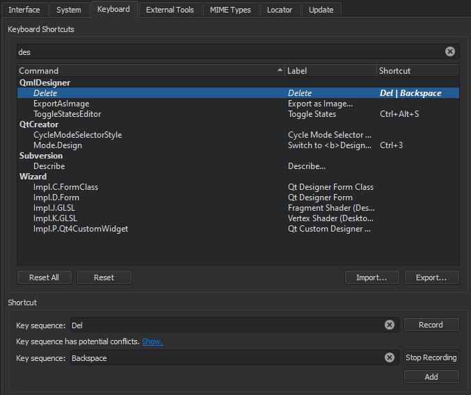

Assign keyboard shortcuts
If your favorite keyboard shortcut is missing, you can add it. Also, you can assign your own keyboard shortcuts for functions that you can easily perform with a mouse, and that therefore do not appear in menus or have default keyboard shortcuts. For example, selecting and deleting words or lines in an editor.
To change an existing keyboard shortcut or assign a new one:
- Select Preferences > Environment > Keyboard.

- Select a command from the list.
- In the Key Sequence field, you have the following options:
- Enter the shortcut key you want to associate with the selected command.
- Record a key sequence.
- To assign multiple keyboard shortcuts to a function, select Add, and enter or record an additional key combination.
- To revert to the default shortcut, select Reset.
Record key sequences
- Select Record.
- Press the keys to use as the keyboard shortcut.
- Select Stop Recording when you are done.
See also Keyboard Shortcuts, Find keyboard shortcuts, and Import and export keyboard shortcuts.